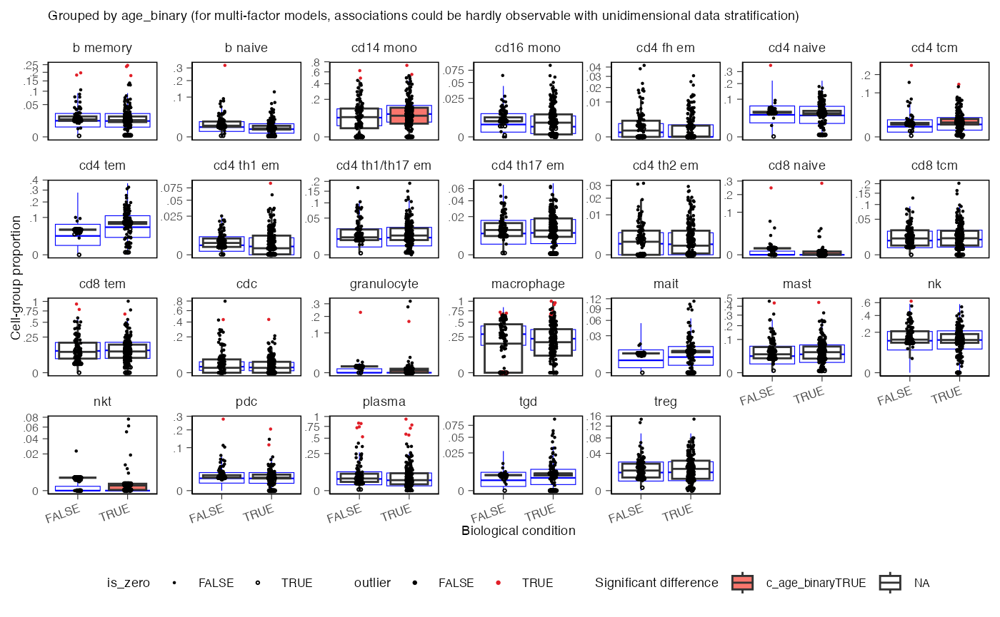
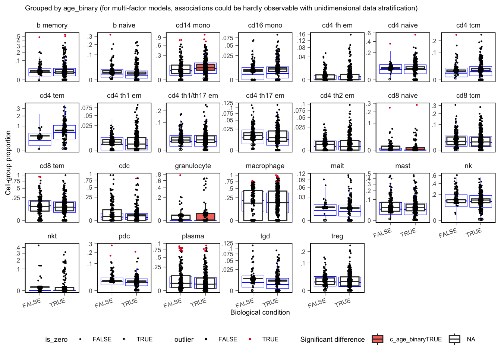

Continue in the same session. This block fits a donor-level model of
immune cell-type proportions with sccomp (Mangiola et al. 2023).
library(dplyr)
library(cellNexusWorkshop)
library(sccomp)
if (!exists("obs_lung")) {
library(cellNexus)
dataset_ids <- respiratory_dataset_ids()
cell_types_query <- c(immune_cell_types(), epithelial_cell_types())
obs_lung <- get_metadata() |>
keep_quality_cells() |>
dplyr::filter(
dataset_id %in% dataset_ids,
cell_type_unified_ensemble %in% cell_types_query,
age_days >= 365,
age_days < 80 * 365
) |>
join_census_tissue() |>
annotate_cell_nexus(min_cells_per_sample = 50)
}Why a composition model
A proportion vector sums to one, so an increase in one cell type
forces a decrease somewhere else. Counts are overdispersed relative to a
binomial. One dissociated sample can move an entire effect.
sccomp models the sample composition jointly, estimates a
mean-variability association, and has an explicit outlier pass.
The denominator is the immune compartment. Epithelial recovery
depends on how hard the tissue was digested. A study that recovered many
pneumocytes would push every immune proportion down, and that shift
would enter the model as if it were age. Epithelial cells stay in
obs_lung for the expression article.
obs_composition <- obs_lung |>
dplyr::filter(cell_type_unified_ensemble %in% immune_cell_types()) |>
# sccomp stores covariates in one column. A logical cannot share that
# column with a character study id. "FALSE" is the reference level.
dplyr::mutate(age_binary = as.character(age_binary))
obs_composition |>
dplyr::count(cell_type_unified_ensemble, name = "n_cells") |>
dplyr::arrange(dplyr::desc(n_cells))## # A tibble: 26 x 2
## cell_type_unified_ensemble n_cells
## <chr> <int>
## 1 macrophage 196975
## 2 cd14 mono 45990
## 3 nk 37230
## 4 cd8 tem 34201
## 5 plasma 23810
## 6 cdc 13773
## 7 mast 13578
## 8 cd4 th1/th17 em 7122
## 9 cd8 tcm 5680
## 10 treg 5368
## # i 16 more rowsFit
The formula is ~ age_binary + dataset_id.
sample_id is the replicate.
cell_type_unified_ensemble is the group.
dataset_id is a fixed effect, so the age contrast is within
study. That is why Exercise 3 matters: a study with one age class
competes with the age term.
bimodal_mean_variability_association = TRUE lets rare
and abundant cell types follow different variability regimes.
The session default is pathfinder, which is fast enough
to finish in the room. A result you would report uses Hamiltonian Monte
Carlo (inference_method = "hmc"). Pathfinder intervals are
a working approximation. Refit with "hmc" before you quote
an effect, and read the sampler diagnostics on that fit. Set
CELLNEXUS_WORKSHOP_INFERENCE=hmc for that fit. The first
call compiles the Stan model and can take several minutes on top of the
fit.
inference_method <- Sys.getenv("CELLNEXUS_WORKSHOP_INFERENCE", "pathfinder")
sccomp_res <- obs_composition |>
sccomp_estimate(
formula_composition = ~ age_binary + dataset_id,
sample = "sample_id",
cell_group = "cell_type_unified_ensemble",
bimodal_mean_variability_association = TRUE,
inference_method = inference_method
) |>
sccomp_remove_outliers() |>
sccomp_test()## Path [29] :Initial log joint density = -887482.726250
## Path [26] :Initial log joint density = -884550.897415
## Path [1] :Initial log joint density = -882166.706576
## Path [38] :Initial log joint density = -888970.628005
## Path [32] :Initial log joint density = -884892.283043
## Path [7] :Initial log joint density = -886561.448540
## Path [13] :Initial log joint density = -886790.361191
## Path [4] :Initial log joint density = -884915.618747
## Path [38] : Iter log prob ||dx|| ||grad|| alpha alpha0 # evals ELBO Best ELBO Notes
## 80 -8.714e+05 1.401e-02 3.187e-01 1.000e+00 1.000e+00 5321 -2.330e+04 -2.336e+04
## Path [38] :Best Iter: [73] ELBO (-23299.135376) evaluations: (5321)
## Path [1] : Iter log prob ||dx|| ||grad|| alpha alpha0 # evals ELBO Best ELBO Notes
## 82 -8.714e+05 2.204e-02 5.431e-01 1.000e+00 1.000e+00 5650 -2.328e+04 -2.334e+04
## Path [1] :Best Iter: [81] ELBO (-23283.094048) evaluations: (5650)
## Path [39] :Initial log joint density = -882127.452518
## Path [2] :Initial log joint density = -889409.523886
## Path [26] : Iter log prob ||dx|| ||grad|| alpha alpha0 # evals ELBO Best ELBO Notes
## 82 -8.714e+05 2.040e-02 3.462e-01 1.000e+00 1.000e+00 5539 -2.330e+04 -2.334e+04
## Path [26] :Best Iter: [73] ELBO (-23295.402612) evaluations: (5539)
## Path [4] : Iter log prob ||dx|| ||grad|| alpha alpha0 # evals ELBO Best ELBO Notes
## 79 -8.714e+05 1.096e-02 5.110e-01 9.090e-01 9.090e-01 5284 -2.331e+04 -2.343e+04
## Path [4] :Best Iter: [73] ELBO (-23308.132532) evaluations: (5284)
## Path [5] :Initial log joint density = -885248.330075
## Path [29] : Iter log prob ||dx|| ||grad|| alpha alpha0 # evals ELBO Best ELBO Notes
## 80 -8.714e+05 9.088e-03 4.455e-01 1.000e+00 1.000e+00 5418 -2.330e+04 -2.341e+04
## Path [29] :Best Iter: [77] ELBO (-23295.627630) evaluations: (5418)
## Path [13] : Iter log prob ||dx|| ||grad|| alpha alpha0 # evals ELBO Best ELBO Notes
## 83 -8.714e+05 1.054e-02 3.802e-01 1.000e+00 1.000e+00 5694 -2.330e+04 -2.336e+04
## Path [13] :Best Iter: [69] ELBO (-23298.676888) evaluations: (5694)
## Path [27] :Initial log joint density = -884118.581743
## Path [30] :Initial log joint density = -886700.408428
## Path [14] :Initial log joint density = -884166.321144
## Path [32] : Iter log prob ||dx|| ||grad|| alpha alpha0 # evals ELBO Best ELBO Notes
## 86 -8.714e+05 1.434e-02 4.043e-01 1.000e+00 1.000e+00 6106 -2.330e+04 -2.341e+04
## Path [32] :Best Iter: [84] ELBO (-23296.212647) evaluations: (6106)
## Path [33] :Initial log joint density = -884868.516500
## Path [7] : Iter log prob ||dx|| ||grad|| alpha alpha0 # evals ELBO Best ELBO Notes
## 92 -8.714e+05 8.491e-03 4.072e-01 1.000e+00 1.000e+00 6771 -2.333e+04 -2.344e+04
## Path [7] :Best Iter: [89] ELBO (-23325.825228) evaluations: (6771)
## Path [8] :Initial log joint density = -884023.470771
## Path [30] : Iter log prob ||dx|| ||grad|| alpha alpha0 # evals ELBO Best ELBO Notes
## 79 -8.714e+05 1.670e-02 4.866e-01 9.202e-01 9.202e-01 5215 -2.330e+04 -2.340e+04
## Path [30] :Best Iter: [68] ELBO (-23298.310070) evaluations: (5215)
## Path [5] : Iter log prob ||dx|| ||grad|| alpha alpha0 # evals ELBO Best ELBO Notes
## 80 -8.714e+05 1.801e-02 1.039e+00 1.000e+00 1.000e+00 5415 -2.330e+04 -2.343e+04
## Path [5] :Best Iter: [69] ELBO (-23301.336957) evaluations: (5415)
## Path [31] :Initial log joint density = -883932.027920
## Path [6] :Initial log joint density = -885536.524455
## Path [2] : Iter log prob ||dx|| ||grad|| alpha alpha0 # evals ELBO Best ELBO Notes
## 86 -8.714e+05 2.700e-03 5.866e-01 6.216e-01 6.216e-01 6019 -2.329e+04 -2.344e+04
## Path [2] :Best Iter: [74] ELBO (-23294.808758) evaluations: (6019)
## Path [14] : Iter log prob ||dx|| ||grad|| alpha alpha0 # evals ELBO Best ELBO Notes
## 79 -8.714e+05 1.333e-02 5.137e-01 1.000e+00 1.000e+00 5242 -2.330e+04 -2.341e+04
## Path [14] :Best Iter: [73] ELBO (-23299.383603) evaluations: (5242)
## Path [3] :Initial log joint density = -884345.532039
## Path [15] :Initial log joint density = -885074.595241
## Path [39] : Iter log prob ||dx|| ||grad|| alpha alpha0 # evals ELBO Best ELBO Notes
## 90 -8.714e+05 2.031e-02 4.365e-01 1.000e+00 1.000e+00 6499 -2.333e+04 -2.334e+04
## Path [39] :Best Iter: [79] ELBO (-23332.533451) evaluations: (6499)
## Path [40] :Initial log joint density = -888409.713011
## Path [27] : Iter log prob ||dx|| ||grad|| alpha alpha0 # evals ELBO Best ELBO Notes
## 100 -8.714e+05 2.484e-02 5.939e-01 1.000e+00 1.000e+00 7671 -2.329e+04 -2.336e+04
## Path [27] :Best Iter: [72] ELBO (-23290.907361) evaluations: (7671)
## Path [28] :Initial log joint density = -884022.080394
## Path [8] : Iter log prob ||dx|| ||grad|| alpha alpha0 # evals ELBO Best ELBO Notes
## 89 -8.714e+05 2.317e-02 3.993e-01 1.000e+00 1.000e+00 6436 -2.329e+04 -2.335e+04
## Path [8] :Best Iter: [86] ELBO (-23290.305750) evaluations: (6436)
## Path [9] :Initial log joint density = -882997.871972
## Path [33] : Iter log prob ||dx|| ||grad|| alpha alpha0 # evals ELBO Best ELBO Notes
## 95 -8.714e+05 1.543e-02 3.552e-01 1.000e+00 1.000e+00 7310 -2.330e+04 -2.341e+04
## Path [33] :Best Iter: [87] ELBO (-23301.822548) evaluations: (7310)
## Path [34] :Initial log joint density = -885022.444844
## Path [31] : Iter log prob ||dx|| ||grad|| alpha alpha0 # evals ELBO Best ELBO Notes
## 79 -8.714e+05 8.072e-03 4.993e-01 1.000e+00 1.000e+00 5403 -2.331e+04 -2.344e+04
## Path [31] :Best Iter: [76] ELBO (-23306.477780) evaluations: (5403)
## Path [35] :Initial log joint density = -882259.854044
## Path [15] : Iter log prob ||dx|| ||grad|| alpha alpha0 # evals ELBO Best ELBO Notes
## 83 -8.714e+05 1.583e-02 6.143e-01 4.393e-01 1.000e+00 5726 -2.329e+04 -2.341e+04
## Path [15] :Best Iter: [81] ELBO (-23290.946836) evaluations: (5726)
## Path [6] : Iter log prob ||dx|| ||grad|| alpha alpha0 # evals ELBO Best ELBO Notes
## 86 -8.714e+05 6.090e-03 3.547e-01 1.000e+00 1.000e+00 6024 -2.333e+04 -2.339e+04
## Path [6] :Best Iter: [82] ELBO (-23326.663786) evaluations: (6024)
## Path [3] : Iter log prob ||dx|| ||grad|| alpha alpha0 # evals ELBO Best ELBO Notes
## 82 -8.714e+05 1.746e-02 5.950e-01 1.000e+00 1.000e+00 5590 -2.331e+04 -2.343e+04
## Path [3] :Best Iter: [80] ELBO (-23308.757629) evaluations: (5590)
## Path [19] :Initial log joint density = -887593.928978
## Path [16] :Initial log joint density = -887784.637376
## Path [44] :Initial log joint density = -886637.724575
## Path [17] :Initial log joint density = -885461.168348
## Path [40] : Iter log prob ||dx|| ||grad|| alpha alpha0 # evals ELBO Best ELBO Notes
## 100 -8.714e+05 3.000e-02 1.946e+00 1.000e+00 1.000e+00 7817 -2.330e+04 -2.331e+04
## Path [40] :Best Iter: [68] ELBO (-23299.289577) evaluations: (7817)
## Path [41] :Initial log joint density = -887004.621263
## Path [9] : Iter log prob ||dx|| ||grad|| alpha alpha0 # evals ELBO Best ELBO Notes
## 81 -8.714e+05 1.942e-02 4.686e-01 1.000e+00 1.000e+00 5476 -2.330e+04 -2.337e+04
## Path [9] :Best Iter: [75] ELBO (-23303.309688) evaluations: (5476)
## Path [10] :Initial log joint density = -886365.521284
## Path [28] : Iter log prob ||dx|| ||grad|| alpha alpha0 # evals ELBO Best ELBO Notes
## 100 -8.714e+05 1.441e-02 4.534e-01 1.000e+00 1.000e+00 7843 -2.331e+04 -2.339e+04
## Path [28] :Best Iter: [73] ELBO (-23314.802465) evaluations: (7843)
## Path [22] :Initial log joint density = -886002.659691
## Path [35] : Iter log prob ||dx|| ||grad|| alpha alpha0 # evals ELBO Best ELBO Notes
## 80 -8.714e+05 1.727e-02 9.028e-01 1.000e+00 1.000e+00 5424 -2.329e+04 -2.342e+04
## Path [35] :Best Iter: [73] ELBO (-23287.541454) evaluations: (5424)
## Path [36] :Initial log joint density = -886787.906057
## Path [19] : Iter log prob ||dx|| ||grad|| alpha alpha0 # evals ELBO Best ELBO Notes
## 82 -8.714e+05 3.185e-03 3.950e-01 6.987e-01 6.987e-01 5583 -2.329e+04 -2.341e+04
## Path [19] :Best Iter: [79] ELBO (-23291.126811) evaluations: (5583)
## Path [20] :Initial log joint density = -887919.380844
## Path [16] : Iter log prob ||dx|| ||grad|| alpha alpha0 # evals ELBO Best ELBO Notes
## 86 -8.714e+05 9.677e-03 2.562e-01 8.995e-01 8.995e-01 6080 -2.332e+04 -2.342e+04
## Path [16] :Best Iter: [84] ELBO (-23324.678478) evaluations: (6080)
## Path [42] :Initial log joint density = -888200.469011
## Path [17] : Iter log prob ||dx|| ||grad|| alpha alpha0 # evals ELBO Best ELBO Notes
## 82 -8.714e+05 1.696e-02 5.240e-01 8.703e-01 8.703e-01 5559 -2.331e+04 -2.343e+04
## Path [17] :Best Iter: [75] ELBO (-23305.673577) evaluations: (5559)
## Path [18] :Initial log joint density = -882386.904637
## Path [44] : Iter log prob ||dx|| ||grad|| alpha alpha0 # evals ELBO Best ELBO Notes
## 100 -8.714e+05 1.524e-01 2.244e+00 1.000e+00 1.000e+00 7833 -2.328e+04 -2.329e+04
## Path [44] :Best Iter: [83] ELBO (-23282.111819) evaluations: (7833)
## Path [41] : Iter log prob ||dx|| ||grad|| alpha alpha0 # evals ELBO Best ELBO Notes
## 81 -8.714e+05 5.954e-03 3.135e-01 1.000e+00 1.000e+00 5530 -2.329e+04 -2.340e+04
## Path [41] :Best Iter: [78] ELBO (-23288.302177) evaluations: (5530)
## Path [37] :Initial log joint density = -885951.806374
## Path [24] :Initial log joint density = -883212.950053
## Path [11] :Initial log joint density = -887578.672061
## Path [34] : Iter log prob ||dx|| ||grad|| alpha alpha0 # evals ELBO Best ELBO Notes
## 77 -8.714e+05 1.565e-02 5.596e-01 1.000e+00 1.000e+00 5044 -2.330e+04 -2.338e+04
## Path [34] :Best Iter: [66] ELBO (-23299.506947) evaluations: (5044)
## Path [45] :Initial log joint density = -886865.030673
## Path [22] : Iter log prob ||dx|| ||grad|| alpha alpha0 # evals ELBO Best ELBO Notes
## 100 -8.714e+05 7.915e-02 2.921e+00 1.000e+00 1.000e+00 7762 -2.330e+04 -2.339e+04
## Path [22] :Best Iter: [99] ELBO (-23300.277907) evaluations: (7762)
## Path [23] :Initial log joint density = -884892.424092
## Path [36] : Iter log prob ||dx|| ||grad|| alpha alpha0 # evals ELBO Best ELBO Notes
## 79 -8.714e+05 3.224e-03 4.846e-01 7.360e-01 7.360e-01 5215 -2.330e+04 -2.344e+04
## Path [36] :Best Iter: [76] ELBO (-23297.517807) evaluations: (5215)
## Path [12] :Initial log joint density = -884534.460077
## Path [21] :Initial log joint density = -885751.448492
## Path [42] : Iter log prob ||dx|| ||grad|| alpha alpha0 # evals ELBO Best ELBO Notes
## 83 -8.714e+05 2.165e-02 4.374e-01 1.000e+00 1.000e+00 5750 -2.329e+04 -2.335e+04
## Path [42] :Best Iter: [80] ELBO (-23294.837178) evaluations: (5750)
## Path [20] : Iter log prob ||dx|| ||grad|| alpha alpha0 # evals ELBO Best ELBO Notes
## 84 -8.714e+05 1.651e-02 3.763e-01 9.862e-01 9.862e-01 5883 -2.330e+04 -2.342e+04
## Path [20] :Best Iter: [76] ELBO (-23302.762835) evaluations: (5883)
## Path [43] :Initial log joint density = -887621.587039
## Path [25] :Initial log joint density = -886259.775817
## Path [37] : Iter log prob ||dx|| ||grad|| alpha alpha0 # evals ELBO Best ELBO Notes
## 78 -8.714e+05 1.048e-02 4.074e-01 9.680e-01 9.680e-01 5187 -2.328e+04 -2.343e+04
## Path [37] :Best Iter: [76] ELBO (-23281.273621) evaluations: (5187)
## Path [50] :Initial log joint density = -889089.726102
## Path [46] :Initial log joint density = -886970.716815
## Path [49] :Initial log joint density = -886180.145099
## Path [11] : Iter log prob ||dx|| ||grad|| alpha alpha0 # evals ELBO Best ELBO Notes
## 100 -8.714e+05 1.620e-02 6.620e-01 1.000e+00 1.000e+00 7799 -2.329e+04 -2.334e+04
## Path [11] :Best Iter: [76] ELBO (-23285.927208) evaluations: (7799)
## Path [45] : Iter log prob ||dx|| ||grad|| alpha alpha0 # evals ELBO Best ELBO Notes
## 89 -8.714e+05 1.300e-02 4.760e-01 1.000e+00 1.000e+00 6350 -2.330e+04 -2.341e+04
## Path [45] :Best Iter: [59] ELBO (-23304.259004) evaluations: (6350)
## Path [21] : Iter log prob ||dx|| ||grad|| alpha alpha0 # evals ELBO Best ELBO Notes
## 78 -8.714e+05 8.668e-03 3.624e-01 1.000e+00 1.000e+00 5110 -2.329e+04 -2.331e+04
## Path [21] :Best Iter: [74] ELBO (-23292.593846) evaluations: (5110)
## Path [12] : Iter log prob ||dx|| ||grad|| alpha alpha0 # evals ELBO Best ELBO Notes
## 82 -8.714e+05 1.639e-02 4.848e-01 1.000e+00 1.000e+00 5584 -2.332e+04 -2.335e+04
## Path [12] :Best Iter: [81] ELBO (-23316.147008) evaluations: (5584)
## Path [43] : Iter log prob ||dx|| ||grad|| alpha alpha0 # evals ELBO Best ELBO Notes
## 79 -8.714e+05 6.835e-03 4.026e-01 1.000e+00 1.000e+00 5383 -2.330e+04 -2.338e+04
## Path [43] :Best Iter: [76] ELBO (-23301.532186) evaluations: (5383)
## Path [50] : Iter log prob ||dx|| ||grad|| alpha alpha0 # evals ELBO Best ELBO Notes
## 83 -8.714e+05 4.728e-03 3.392e-01 1.000e+00 1.000e+00 5665 -2.330e+04 -2.341e+04
## Path [50] :Best Iter: [79] ELBO (-23301.583696) evaluations: (5665)
## Path [46] : Iter log prob ||dx|| ||grad|| alpha alpha0 # evals ELBO Best ELBO Notes
## 85 -8.714e+05 8.061e-03 4.351e-01 1.000e+00 1.000e+00 5920 -2.332e+04 -2.336e+04
## Path [46] :Best Iter: [70] ELBO (-23317.764642) evaluations: (5920)
## Path [49] : Iter log prob ||dx|| ||grad|| alpha alpha0 # evals ELBO Best ELBO Notes
## 81 -8.714e+05 1.836e-02 3.604e-01 1.000e+00 1.000e+00 5495 -2.330e+04 -2.336e+04
## Path [49] :Best Iter: [78] ELBO (-23300.178962) evaluations: (5495)
## Path [47] :Initial log joint density = -884434.149615
## Path [18] : Iter log prob ||dx|| ||grad|| alpha alpha0 # evals ELBO Best ELBO Notes
## 81 -8.714e+05 4.887e-03 4.987e-01 6.482e-01 6.482e-01 5446 -2.331e+04 -2.343e+04
## Path [18] :Best Iter: [73] ELBO (-23305.714831) evaluations: (5446)
## Path [23] : Iter log prob ||dx|| ||grad|| alpha alpha0 # evals ELBO Best ELBO Notes
## 85 -8.714e+05 2.640e-02 6.655e-01 1.000e+00 1.000e+00 5866 -2.333e+04 -2.351e+04
## Path [23] :Best Iter: [58] ELBO (-23327.189695) evaluations: (5866)
## Path [25] : Iter log prob ||dx|| ||grad|| alpha alpha0 # evals ELBO Best ELBO Notes
## 80 -8.714e+05 1.058e-02 3.991e-01 1.000e+00 1.000e+00 5410 -2.330e+04 -2.336e+04
## Path [25] :Best Iter: [77] ELBO (-23299.588039) evaluations: (5410)
## Path [47] : Iter log prob ||dx|| ||grad|| alpha alpha0 # evals ELBO Best ELBO Notes
## 95 -8.714e+05 1.056e-02 3.358e-01 9.346e-01 9.346e-01 7115 -2.330e+04 -2.339e+04
## Path [47] :Best Iter: [88] ELBO (-23297.580548) evaluations: (7115)
## Path [48] :Initial log joint density = -884528.285440
## Path [48] : Iter log prob ||dx|| ||grad|| alpha alpha0 # evals ELBO Best ELBO Notes
## 80 -8.714e+05 3.761e-03 5.708e-01 5.860e-01 5.860e-01 5398 -2.328e+04 -2.341e+04
## Path [48] :Best Iter: [72] ELBO (-23284.929846) evaluations: (5398)
## Path [24] : Iter log prob ||dx|| ||grad|| alpha alpha0 # evals ELBO Best ELBO Notes
## 84 -8.714e+05 1.559e-02 3.039e-01 1.000e+00 1.000e+00 5883 -2.330e+04 -2.335e+04
## Path [24] :Best Iter: [76] ELBO (-23301.715794) evaluations: (5883)
## Path [10] : Iter log prob ||dx|| ||grad|| alpha alpha0 # evals ELBO Best ELBO Notes
## 85 -8.714e+05 1.119e-02 3.233e-01 1.000e+00 1.000e+00 5886 -2.332e+04 -2.348e+04
## Path [10] :Best Iter: [65] ELBO (-23324.292685) evaluations: (5886)
## Finished in 28.6 seconds.## Running standalone generated quantities after 1 MCMC chain, with 8 thread(s) per chain...
##
## Chain 1 finished in 0.0 seconds.## Path [4] :Initial log joint density = -723864.453765
## Path [7] :Initial log joint density = -723305.288936
## Path [2] :Initial log joint density = -719406.357594
## Path [1] :Initial log joint density = -725952.842082
## Path [32] :Initial log joint density = -723008.666609
## Path [38] :Initial log joint density = -721394.123594
## Path [13] :Initial log joint density = -723249.226403
## Path [26] :Initial log joint density = -722858.751490
## Path [32] : Iter log prob ||dx|| ||grad|| alpha alpha0 # evals ELBO Best ELBO Notes
## 90 -7.088e+05 1.814e-02 4.701e-01 1.000e+00 1.000e+00 6564 -2.018e+04 -2.026e+04
## Path [32] :Best Iter: [88] ELBO (-20184.969986) evaluations: (6564)
## Path [4] : Iter log prob ||dx|| ||grad|| alpha alpha0 # evals ELBO Best ELBO Notes
## 90 -7.088e+05 1.985e-02 4.444e-01 1.000e+00 1.000e+00 6436 -2.019e+04 -2.021e+04
## Path [4] :Best Iter: [79] ELBO (-20187.076567) evaluations: (6436)
## Path [38] : Iter log prob ||dx|| ||grad|| alpha alpha0 # evals ELBO Best ELBO Notes
## 92 -7.088e+05 1.445e-02 3.104e-01 1.000e+00 1.000e+00 6796 -2.015e+04 -2.019e+04
## Path [38] :Best Iter: [90] ELBO (-20154.201943) evaluations: (6796)
## Path [1] : Iter log prob ||dx|| ||grad|| alpha alpha0 # evals ELBO Best ELBO Notes
## 89 -7.088e+05 6.282e-03 3.805e-01 1.000e+00 1.000e+00 6421 -2.017e+04 -2.029e+04
## Path [1] :Best Iter: [86] ELBO (-20166.948862) evaluations: (6421)
## Path [26] : Iter log prob ||dx|| ||grad|| alpha alpha0 # evals ELBO Best ELBO Notes
## 91 -7.088e+05 1.108e-02 2.762e-01 8.497e-01 8.497e-01 6553 -2.018e+04 -2.029e+04
## Path [26] :Best Iter: [73] ELBO (-20181.653885) evaluations: (6553)
## Path [7] : Iter log prob ||dx|| ||grad|| alpha alpha0 # evals ELBO Best ELBO Notes
## 100 -7.088e+05 3.492e-02 6.975e-01 1.000e+00 1.000e+00 7651 -2.020e+04 -2.028e+04
## Path [7] :Best Iter: [80] ELBO (-20195.531396) evaluations: (7651)
## Path [33] :Initial log joint density = -720739.517932
## Path [39] :Initial log joint density = -723866.561352
## Path [2] : Iter log prob ||dx|| ||grad|| alpha alpha0 # evals ELBO Best ELBO Notes
## 100 -7.088e+05 7.964e-03 4.796e-01 1.000e+00 1.000e+00 7720 -2.019e+04 -2.024e+04
## Path [2] :Best Iter: [96] ELBO (-20187.035015) evaluations: (7720)
## Path [13] : Iter log prob ||dx|| ||grad|| alpha alpha0 # evals ELBO Best ELBO Notes
## 100 -7.088e+05 3.561e-02 8.666e-01 1.000e+00 1.000e+00 8025 -2.019e+04 -2.016e+04
## Path [13] :Best Iter: [100] ELBO (-20160.665111) evaluations: (8025)
## Path [33] : Iter log prob ||dx|| ||grad|| alpha alpha0 # evals ELBO Best ELBO Notes
## 88 -7.088e+05 5.561e-03 2.685e-01 1.000e+00 1.000e+00 6228 -2.017e+04 -2.026e+04
## Path [33] :Best Iter: [80] ELBO (-20168.668965) evaluations: (6228)
## Path [39] : Iter log prob ||dx|| ||grad|| alpha alpha0 # evals ELBO Best ELBO Notes
## 100 -7.088e+05 1.019e-02 3.929e-01 1.000e+00 1.000e+00 7747 -2.018e+04 -2.027e+04
## Path [39] :Best Iter: [80] ELBO (-20181.945050) evaluations: (7747)
## Path [34] :Initial log joint density = -722734.409484
## Path [40] :Initial log joint density = -723671.644457
## Path [29] :Initial log joint density = -720723.823620
## Path [8] :Initial log joint density = -722892.990433
## Path [14] :Initial log joint density = -724431.843998
## Path [3] :Initial log joint density = -723355.220856
## Path [27] :Initial log joint density = -724445.593282
## Path [5] :Initial log joint density = -723174.091411
## Path [34] : Iter log prob ||dx|| ||grad|| alpha alpha0 # evals ELBO Best ELBO Notes
## 86 -7.088e+05 1.399e-02 4.670e-01 1.000e+00 1.000e+00 5978 -2.015e+04 -2.028e+04
## Path [34] :Best Iter: [79] ELBO (-20153.355549) evaluations: (5978)
## Path [40] : Iter log prob ||dx|| ||grad|| alpha alpha0 # evals ELBO Best ELBO Notes
## 86 -7.088e+05 1.446e-02 4.208e-01 1.000e+00 1.000e+00 6147 -2.017e+04 -2.022e+04
## Path [40] :Best Iter: [84] ELBO (-20167.879847) evaluations: (6147)
## Path [35] :Initial log joint density = -724794.931930
## Path [41] :Initial log joint density = -723937.276982
## Path [14] : Iter log prob ||dx|| ||grad|| alpha alpha0 # evals ELBO Best ELBO Notes
## 88 -7.088e+05 7.462e-03 3.230e-01 9.300e-01 9.300e-01 6205 -2.017e+04 -2.028e+04
## Path [14] :Best Iter: [86] ELBO (-20174.940478) evaluations: (6205)
## Path [8] : Iter log prob ||dx|| ||grad|| alpha alpha0 # evals ELBO Best ELBO Notes
## 90 -7.088e+05 1.231e-02 4.238e-01 9.876e-01 9.876e-01 6578 -2.017e+04 -2.026e+04
## Path [8] :Best Iter: [88] ELBO (-20168.345363) evaluations: (6578)
## Path [5] : Iter log prob ||dx|| ||grad|| alpha alpha0 # evals ELBO Best ELBO Notes
## 90 -7.088e+05 6.226e-03 3.920e-01 1.000e+00 1.000e+00 6599 -2.018e+04 -2.026e+04
## Path [5] :Best Iter: [87] ELBO (-20183.742823) evaluations: (6599)
## Path [27] : Iter log prob ||dx|| ||grad|| alpha alpha0 # evals ELBO Best ELBO Notes
## 92 -7.088e+05 4.666e-03 2.872e-01 1.000e+00 1.000e+00 6801 -2.016e+04 -2.029e+04
## Path [27] :Best Iter: [89] ELBO (-20155.909104) evaluations: (6801)
## Path [29] : Iter log prob ||dx|| ||grad|| alpha alpha0 # evals ELBO Best ELBO Notes
## 100 -7.088e+05 1.001e-01 2.265e+00 1.000e+00 1.000e+00 7689 -2.018e+04 -2.040e+04
## Path [29] :Best Iter: [61] ELBO (-20180.208979) evaluations: (7689)
## Path [3] : Iter log prob ||dx|| ||grad|| alpha alpha0 # evals ELBO Best ELBO Notes
## 100 -7.088e+05 5.075e-02 2.490e+00 8.170e-01 8.170e-01 7760 -2.018e+04 -2.026e+04
## Path [3] :Best Iter: [84] ELBO (-20183.781445) evaluations: (7760)
## Path [15] :Initial log joint density = -722997.763664
## Path [6] :Initial log joint density = -724204.050384
## Path [28] :Initial log joint density = -725748.367164
## Path [35] : Iter log prob ||dx|| ||grad|| alpha alpha0 # evals ELBO Best ELBO Notes
## 100 -7.088e+05 1.030e-02 3.806e-01 1.000e+00 1.000e+00 7752 -2.015e+04 -2.018e+04
## Path [35] :Best Iter: [97] ELBO (-20151.704397) evaluations: (7752)
## Path [41] : Iter log prob ||dx|| ||grad|| alpha alpha0 # evals ELBO Best ELBO Notes
## 91 -7.088e+05 1.009e-02 3.803e-01 1.000e+00 1.000e+00 6687 -2.017e+04 -2.019e+04
## Path [41] :Best Iter: [75] ELBO (-20167.969860) evaluations: (6687)
## Path [6] : Iter log prob ||dx|| ||grad|| alpha alpha0 # evals ELBO Best ELBO Notes
## 88 -7.088e+05 7.925e-03 3.550e-01 1.000e+00 1.000e+00 6253 -2.016e+04 -2.020e+04
## Path [6] :Best Iter: [84] ELBO (-20157.628942) evaluations: (6253)
## Path [15] : Iter log prob ||dx|| ||grad|| alpha alpha0 # evals ELBO Best ELBO Notes
## 100 -7.088e+05 1.493e-01 3.087e+00 1.000e+00 1.000e+00 7680 -2.017e+04 -2.044e+04
## Path [15] :Best Iter: [91] ELBO (-20166.126092) evaluations: (7680)
## Path [19] :Initial log joint density = -726244.291787
## Path [16] :Initial log joint density = -720322.839018
## Path [36] :Initial log joint density = -723424.145031
## Path [30] :Initial log joint density = -721858.989852
## Path [9] :Initial log joint density = -723842.078271
## Path [22] :Initial log joint density = -723173.274740
## Path [42] :Initial log joint density = -723286.268048
## Path [28] : Iter log prob ||dx|| ||grad|| alpha alpha0 # evals ELBO Best ELBO Notes
## 100 -7.088e+05 2.573e-02 5.275e-01 1.000e+00 1.000e+00 7651 -2.021e+04 -2.025e+04
## Path [28] :Best Iter: [95] ELBO (-20210.688656) evaluations: (7651)
## Path [37] :Initial log joint density = -721411.439946
## Path [19] : Iter log prob ||dx|| ||grad|| alpha alpha0 # evals ELBO Best ELBO Notes
## 90 -7.088e+05 2.286e-02 4.992e-01 1.000e+00 1.000e+00 6436 -2.016e+04 -2.020e+04
## Path [19] :Best Iter: [84] ELBO (-20161.694420) evaluations: (6436)
## Path [20] :Initial log joint density = -724159.702791
## Path [16] : Iter log prob ||dx|| ||grad|| alpha alpha0 # evals ELBO Best ELBO Notes
## 95 -7.088e+05 6.481e-03 3.363e-01 1.000e+00 1.000e+00 7309 -2.019e+04 -2.025e+04
## Path [16] :Best Iter: [92] ELBO (-20192.700671) evaluations: (7309)
## Path [17] :Initial log joint density = -719629.401401
## Path [9] : Iter log prob ||dx|| ||grad|| alpha alpha0 # evals ELBO Best ELBO Notes
## 88 -7.088e+05 1.160e-02 3.081e-01 1.000e+00 1.000e+00 6205 -2.018e+04 -2.020e+04
## Path [9] :Best Iter: [85] ELBO (-20177.006154) evaluations: (6205)
## Path [36] : Iter log prob ||dx|| ||grad|| alpha alpha0 # evals ELBO Best ELBO Notes
## 90 -7.088e+05 4.494e-03 3.328e-01 1.000e+00 1.000e+00 6587 -2.018e+04 -2.029e+04
## Path [36] :Best Iter: [81] ELBO (-20179.818337) evaluations: (6587)
## Path [30] : Iter log prob ||dx|| ||grad|| alpha alpha0 # evals ELBO Best ELBO Notes
## 100 -7.088e+05 1.988e-02 4.784e-01 1.000e+00 1.000e+00 7762 -2.019e+04 -2.024e+04
## Path [30] :Best Iter: [94] ELBO (-20189.284855) evaluations: (7762)
## Path [42] : Iter log prob ||dx|| ||grad|| alpha alpha0 # evals ELBO Best ELBO Notes
## 100 -7.088e+05 2.514e-02 3.326e-01 1.000e+00 1.000e+00 7651 -2.016e+04 -2.017e+04
## Path [42] :Best Iter: [99] ELBO (-20161.365883) evaluations: (7651)
## Path [10] :Initial log joint density = -724396.759404
## Path [31] :Initial log joint density = -721882.812075
## Path [18] :Initial log joint density = -726105.379956
## Path [22] : Iter log prob ||dx|| ||grad|| alpha alpha0 # evals ELBO Best ELBO Notes
## 100 -7.088e+05 2.437e-02 4.814e-01 1.000e+00 1.000e+00 7806 -2.017e+04 -2.018e+04
## Path [22] :Best Iter: [99] ELBO (-20173.500220) evaluations: (7806)
## Path [44] :Initial log joint density = -722439.198574
## Path [43] :Initial log joint density = -721352.030894
## Path [17] : Iter log prob ||dx|| ||grad|| alpha alpha0 # evals ELBO Best ELBO Notes
## 100 -7.088e+05 3.162e-02 4.742e+01 1.743e-01 1.743e-01 7783 -2.021e+04 -2.622e+04
## Path [17] :Best Iter: [55] ELBO (-20211.134854) evaluations: (7783)
## Path [23] :Initial log joint density = -721258.893393
## Path [12] :Initial log joint density = -723431.729506
## Path [11] :Initial log joint density = -724018.647122
## Path [10] : Iter log prob ||dx|| ||grad|| alpha alpha0 # evals ELBO Best ELBO Notes
## 84 -7.088e+05 2.659e-02 5.707e-01 1.000e+00 1.000e+00 5933 -2.015e+04 -2.023e+04
## Path [10] :Best Iter: [82] ELBO (-20147.077052) evaluations: (5933)
## Path [18] : Iter log prob ||dx|| ||grad|| alpha alpha0 # evals ELBO Best ELBO Notes
## 90 -7.088e+05 6.103e-03 2.678e-01 8.679e-01 8.679e-01 6582 -2.015e+04 -2.027e+04
## Path [18] :Best Iter: [83] ELBO (-20151.950278) evaluations: (6582)
## Path [24] :Initial log joint density = -727447.009962
## Path [31] : Iter log prob ||dx|| ||grad|| alpha alpha0 # evals ELBO Best ELBO Notes
## 100 -7.088e+05 4.080e-02 1.741e+00 1.000e+00 1.000e+00 7677 -2.018e+04 -2.020e+04
## Path [31] :Best Iter: [96] ELBO (-20179.294991) evaluations: (7677)
## Path [43] : Iter log prob ||dx|| ||grad|| alpha alpha0 # evals ELBO Best ELBO Notes
## 100 -7.088e+05 3.238e-02 5.862e-01 1.000e+00 1.000e+00 7848 -2.018e+04 -2.019e+04
## Path [43] :Best Iter: [89] ELBO (-20177.533486) evaluations: (7848)
## Path [44] : Iter log prob ||dx|| ||grad|| alpha alpha0 # evals ELBO Best ELBO Notes
## 95 -7.088e+05 1.851e-02 3.573e-01 1.000e+00 1.000e+00 7175 -2.019e+04 -2.025e+04
## Path [44] :Best Iter: [86] ELBO (-20185.110011) evaluations: (7175)
## Path [21] :Initial log joint density = -725058.140611
## Path [47] :Initial log joint density = -723418.253748
## Path [25] :Initial log joint density = -726222.180404
## Path [45] :Initial log joint density = -721646.574729
## Path [46] :Initial log joint density = -723362.056617
## Path [12] : Iter log prob ||dx|| ||grad|| alpha alpha0 # evals ELBO Best ELBO Notes
## 85 -7.088e+05 4.416e-03 4.196e-01 6.616e-01 6.616e-01 5944 -2.015e+04 -2.027e+04
## Path [12] :Best Iter: [82] ELBO (-20151.698500) evaluations: (5944)
## Path [49] :Initial log joint density = -726484.137743
## Path [50] :Initial log joint density = -724450.009154
## Path [24] : Iter log prob ||dx|| ||grad|| alpha alpha0 # evals ELBO Best ELBO Notes
## 100 -7.088e+05 6.958e-02 7.422e+01 3.538e-01 3.538e-01 7674 -2.022e+04 -1.295e+06
## Path [24] :Best Iter: [51] ELBO (-20220.922153) evaluations: (7674)
## Path [47] : Iter log prob ||dx|| ||grad|| alpha alpha0 # evals ELBO Best ELBO Notes
## 86 -7.088e+05 2.358e-02 4.603e-01 1.000e+00 1.000e+00 6020 -2.016e+04 -2.022e+04
## Path [47] :Best Iter: [82] ELBO (-20163.263874) evaluations: (6020)
## Path [20] : Iter log prob ||dx|| ||grad|| alpha alpha0 # evals ELBO Best ELBO Notes
## 100 -7.088e+05 2.116e-01 3.874e+00 1.000e+00 1.000e+00 7947 -2.018e+04 -2.019e+04
## Path [20] :Best Iter: [91] ELBO (-20176.388677) evaluations: (7947)
## Path [45] : Iter log prob ||dx|| ||grad|| alpha alpha0 # evals ELBO Best ELBO Notes
## 86 -7.088e+05 2.308e-02 4.257e-01 1.000e+00 1.000e+00 6010 -2.017e+04 -2.023e+04
## Path [45] :Best Iter: [82] ELBO (-20171.639808) evaluations: (6010)
## Path [46] : Iter log prob ||dx|| ||grad|| alpha alpha0 # evals ELBO Best ELBO Notes
## 86 -7.088e+05 6.217e-03 3.643e-01 1.000e+00 1.000e+00 6134 -2.016e+04 -2.025e+04
## Path [46] :Best Iter: [83] ELBO (-20158.200555) evaluations: (6134)
## Path [21] : Iter log prob ||dx|| ||grad|| alpha alpha0 # evals ELBO Best ELBO Notes
## 94 -7.088e+05 9.823e-03 3.658e-01 1.000e+00 1.000e+00 6995 -2.018e+04 -2.029e+04
## Path [21] :Best Iter: [92] ELBO (-20180.441559) evaluations: (6995)
## Path [48] :Initial log joint density = -720246.268713
## Path [50] : Iter log prob ||dx|| ||grad|| alpha alpha0 # evals ELBO Best ELBO Notes
## 95 -7.088e+05 5.345e-03 3.725e-01 7.048e-01 7.048e-01 7031 -2.019e+04 -2.031e+04
## Path [50] :Best Iter: [76] ELBO (-20188.960352) evaluations: (7031)
## Path [49] : Iter log prob ||dx|| ||grad|| alpha alpha0 # evals ELBO Best ELBO Notes
## 100 -7.088e+05 2.753e-02 4.270e-01 1.000e+00 1.000e+00 7742 -2.018e+04 -2.020e+04
## Path [49] :Best Iter: [89] ELBO (-20176.541006) evaluations: (7742)
## Path [48] : Iter log prob ||dx|| ||grad|| alpha alpha0 # evals ELBO Best ELBO Notes
## 96 -7.088e+05 6.967e-03 3.614e-01 1.000e+00 1.000e+00 7335 -2.018e+04 -2.029e+04
## Path [48] :Best Iter: [93] ELBO (-20183.242047) evaluations: (7335)
## Path [25] : Iter log prob ||dx|| ||grad|| alpha alpha0 # evals ELBO Best ELBO Notes
## 91 -7.088e+05 1.585e-02 3.834e-01 1.000e+00 1.000e+00 6631 -2.016e+04 -2.024e+04
## Path [25] :Best Iter: [89] ELBO (-20161.171988) evaluations: (6631)
## Path [23] : Iter log prob ||dx|| ||grad|| alpha alpha0 # evals ELBO Best ELBO Notes
## 91 -7.088e+05 7.336e-03 4.280e-01 1.000e+00 1.000e+00 6669 -2.018e+04 -2.029e+04
## Path [23] :Best Iter: [83] ELBO (-20175.814839) evaluations: (6669)
## Path [37] : Iter log prob ||dx|| ||grad|| alpha alpha0 # evals ELBO Best ELBO Notes
## 100 -7.088e+05 1.587e-02 3.688e-01 1.000e+00 1.000e+00 7819 -2.016e+04 -2.016e+04
## Path [37] :Best Iter: [100] ELBO (-20155.609557) evaluations: (7819)
## Path [11] : Iter log prob ||dx|| ||grad|| alpha alpha0 # evals ELBO Best ELBO Notes
## 85 -7.088e+05 7.076e-03 4.524e-01 1.000e+00 1.000e+00 5866 -2.016e+04 -2.023e+04
## Path [11] :Best Iter: [77] ELBO (-20162.063143) evaluations: (5866)
## Finished in 72.6 seconds.
## Running standalone generated quantities after 1 MCMC chain, with 8 thread(s) per chain...
##
## Chain 1 finished in 0.0 seconds.## Path [38] :Initial log joint density = -721394.123594
## Path [26] :Initial log joint density = -722858.751490
## Path [7] :Initial log joint density = -723305.288936
## Path [13] :Initial log joint density = -723249.226403
## Path [2] :Initial log joint density = -719406.357594
## Path [32] :Initial log joint density = -723008.666609
## Path [4] :Initial log joint density = -723864.453765
## Path [1] :Initial log joint density = -725952.842082
## Path [4] : Iter log prob ||dx|| ||grad|| alpha alpha0 # evals ELBO Best ELBO Notes
## 90 -7.088e+05 1.985e-02 4.444e-01 1.000e+00 1.000e+00 6436 -2.019e+04 -2.021e+04
## Path [4] :Best Iter: [79] ELBO (-20187.076567) evaluations: (6436)
## Path [1] : Iter log prob ||dx|| ||grad|| alpha alpha0 # evals ELBO Best ELBO Notes
## 89 -7.088e+05 6.282e-03 3.805e-01 1.000e+00 1.000e+00 6421 -2.017e+04 -2.029e+04
## Path [1] :Best Iter: [86] ELBO (-20166.948862) evaluations: (6421)
## Path [32] : Iter log prob ||dx|| ||grad|| alpha alpha0 # evals ELBO Best ELBO Notes
## 90 -7.088e+05 1.814e-02 4.701e-01 1.000e+00 1.000e+00 6564 -2.018e+04 -2.026e+04
## Path [32] :Best Iter: [88] ELBO (-20184.969986) evaluations: (6564)
## Path [5] :Initial log joint density = -723174.091411
## Path [10] :Initial log joint density = -724396.759404
## Path [33] :Initial log joint density = -720739.517932
## Path [26] : Iter log prob ||dx|| ||grad|| alpha alpha0 # evals ELBO Best ELBO Notes
## 91 -7.088e+05 1.108e-02 2.762e-01 8.497e-01 8.497e-01 6553 -2.018e+04 -2.029e+04
## Path [26] :Best Iter: [73] ELBO (-20181.653885) evaluations: (6553)
## Path [38] : Iter log prob ||dx|| ||grad|| alpha alpha0 # evals ELBO Best ELBO Notes
## 92 -7.088e+05 1.445e-02 3.104e-01 1.000e+00 1.000e+00 6796 -2.015e+04 -2.019e+04
## Path [38] :Best Iter: [90] ELBO (-20154.201943) evaluations: (6796)
## Path [27] :Initial log joint density = -724445.593282
## Path [39] :Initial log joint density = -723866.561352
## Path [7] : Iter log prob ||dx|| ||grad|| alpha alpha0 # evals ELBO Best ELBO Notes
## 100 -7.088e+05 3.492e-02 6.975e-01 1.000e+00 1.000e+00 7651 -2.020e+04 -2.028e+04
## Path [7] :Best Iter: [80] ELBO (-20195.531396) evaluations: (7651)
## Path [8] :Initial log joint density = -722892.990433
## Path [13] : Iter log prob ||dx|| ||grad|| alpha alpha0 # evals ELBO Best ELBO Notes
## 100 -7.088e+05 3.561e-02 8.666e-01 1.000e+00 1.000e+00 8025 -2.019e+04 -2.016e+04
## Path [13] :Best Iter: [100] ELBO (-20160.665111) evaluations: (8025)
## Path [14] :Initial log joint density = -724431.843998
## Path [2] : Iter log prob ||dx|| ||grad|| alpha alpha0 # evals ELBO Best ELBO Notes
## 100 -7.088e+05 7.964e-03 4.796e-01 1.000e+00 1.000e+00 7720 -2.019e+04 -2.024e+04
## Path [2] :Best Iter: [96] ELBO (-20187.035015) evaluations: (7720)
## Path [3] :Initial log joint density = -723355.220856
## Path [5] : Iter log prob ||dx|| ||grad|| alpha alpha0 # evals ELBO Best ELBO Notes
## 90 -7.088e+05 6.226e-03 3.920e-01 1.000e+00 1.000e+00 6599 -2.018e+04 -2.026e+04
## Path [5] :Best Iter: [87] ELBO (-20183.742823) evaluations: (6599)
## Path [6] :Initial log joint density = -724204.050384
## Path [10] : Iter log prob ||dx|| ||grad|| alpha alpha0 # evals ELBO Best ELBO Notes
## 84 -7.088e+05 2.659e-02 5.707e-01 1.000e+00 1.000e+00 5933 -2.015e+04 -2.023e+04
## Path [10] :Best Iter: [82] ELBO (-20147.077052) evaluations: (5933)
## Path [33] : Iter log prob ||dx|| ||grad|| alpha alpha0 # evals ELBO Best ELBO Notes
## 88 -7.088e+05 5.561e-03 2.685e-01 1.000e+00 1.000e+00 6228 -2.017e+04 -2.026e+04
## Path [33] :Best Iter: [80] ELBO (-20168.668965) evaluations: (6228)
## Path [11] :Initial log joint density = -724018.647122
## Path [34] :Initial log joint density = -722734.409484
## Path [27] : Iter log prob ||dx|| ||grad|| alpha alpha0 # evals ELBO Best ELBO Notes
## 92 -7.088e+05 4.666e-03 2.872e-01 1.000e+00 1.000e+00 6801 -2.016e+04 -2.029e+04
## Path [27] :Best Iter: [89] ELBO (-20155.909104) evaluations: (6801)
## Path [28] :Initial log joint density = -725748.367164
## Path [14] : Iter log prob ||dx|| ||grad|| alpha alpha0 # evals ELBO Best ELBO Notes
## 88 -7.088e+05 7.462e-03 3.230e-01 9.300e-01 9.300e-01 6205 -2.017e+04 -2.028e+04
## Path [14] :Best Iter: [86] ELBO (-20174.940478) evaluations: (6205)
## Path [8] : Iter log prob ||dx|| ||grad|| alpha alpha0 # evals ELBO Best ELBO Notes
## 90 -7.088e+05 1.231e-02 4.238e-01 9.876e-01 9.876e-01 6578 -2.017e+04 -2.026e+04
## Path [8] :Best Iter: [88] ELBO (-20168.345363) evaluations: (6578)
## Path [15] :Initial log joint density = -722997.763664
## Path [9] :Initial log joint density = -723842.078271
## Path [39] : Iter log prob ||dx|| ||grad|| alpha alpha0 # evals ELBO Best ELBO Notes
## 100 -7.088e+05 1.019e-02 3.929e-01 1.000e+00 1.000e+00 7747 -2.018e+04 -2.027e+04
## Path [39] :Best Iter: [80] ELBO (-20181.945050) evaluations: (7747)
## Path [40] :Initial log joint density = -723671.644457
## Path [3] : Iter log prob ||dx|| ||grad|| alpha alpha0 # evals ELBO Best ELBO Notes
## 100 -7.088e+05 5.075e-02 2.490e+00 8.170e-01 8.170e-01 7760 -2.018e+04 -2.026e+04
## Path [3] :Best Iter: [84] ELBO (-20183.781445) evaluations: (7760)
## Path [44] :Initial log joint density = -722439.198574
## Path [6] : Iter log prob ||dx|| ||grad|| alpha alpha0 # evals ELBO Best ELBO Notes
## 88 -7.088e+05 7.925e-03 3.550e-01 1.000e+00 1.000e+00 6253 -2.016e+04 -2.020e+04
## Path [6] :Best Iter: [84] ELBO (-20157.628942) evaluations: (6253)
## Path [19] :Initial log joint density = -726244.291787
## Path [11] : Iter log prob ||dx|| ||grad|| alpha alpha0 # evals ELBO Best ELBO Notes
## 85 -7.088e+05 7.076e-03 4.524e-01 1.000e+00 1.000e+00 5866 -2.016e+04 -2.023e+04
## Path [11] :Best Iter: [77] ELBO (-20162.063142) evaluations: (5866)
## Path [34] : Iter log prob ||dx|| ||grad|| alpha alpha0 # evals ELBO Best ELBO Notes
## 86 -7.088e+05 1.399e-02 4.670e-01 1.000e+00 1.000e+00 5978 -2.015e+04 -2.028e+04
## Path [34] :Best Iter: [79] ELBO (-20153.355549) evaluations: (5978)
## Path [12] :Initial log joint density = -723431.729506
## Path [35] :Initial log joint density = -724794.931930
## Path [9] : Iter log prob ||dx|| ||grad|| alpha alpha0 # evals ELBO Best ELBO Notes
## 88 -7.088e+05 1.160e-02 3.081e-01 1.000e+00 1.000e+00 6205 -2.018e+04 -2.020e+04
## Path [9] :Best Iter: [85] ELBO (-20177.006154) evaluations: (6205)
## Path [40] : Iter log prob ||dx|| ||grad|| alpha alpha0 # evals ELBO Best ELBO Notes
## 86 -7.088e+05 1.446e-02 4.208e-01 1.000e+00 1.000e+00 6147 -2.017e+04 -2.022e+04
## Path [40] :Best Iter: [84] ELBO (-20167.879847) evaluations: (6147)
## Path [41] :Initial log joint density = -723937.276982
## Path [16] :Initial log joint density = -720322.839018
## Path [28] : Iter log prob ||dx|| ||grad|| alpha alpha0 # evals ELBO Best ELBO Notes
## 100 -7.088e+05 2.573e-02 5.275e-01 1.000e+00 1.000e+00 7651 -2.021e+04 -2.025e+04
## Path [28] :Best Iter: [95] ELBO (-20210.688656) evaluations: (7651)
## Path [29] :Initial log joint density = -720723.823620
## Path [15] : Iter log prob ||dx|| ||grad|| alpha alpha0 # evals ELBO Best ELBO Notes
## 100 -7.088e+05 1.493e-01 3.087e+00 1.000e+00 1.000e+00 7680 -2.017e+04 -2.044e+04
## Path [15] :Best Iter: [91] ELBO (-20166.126092) evaluations: (7680)
## Path [36] :Initial log joint density = -723424.145031
## Path [44] : Iter log prob ||dx|| ||grad|| alpha alpha0 # evals ELBO Best ELBO Notes
## 95 -7.088e+05 1.851e-02 3.573e-01 1.000e+00 1.000e+00 7175 -2.019e+04 -2.025e+04
## Path [44] :Best Iter: [86] ELBO (-20185.110011) evaluations: (7175)
## Path [45] :Initial log joint density = -721646.574729
## Path [19] : Iter log prob ||dx|| ||grad|| alpha alpha0 # evals ELBO Best ELBO Notes
## 90 -7.088e+05 2.286e-02 4.992e-01 1.000e+00 1.000e+00 6436 -2.016e+04 -2.020e+04
## Path [19] :Best Iter: [84] ELBO (-20161.694420) evaluations: (6436)
## Path [12] : Iter log prob ||dx|| ||grad|| alpha alpha0 # evals ELBO Best ELBO Notes
## 85 -7.088e+05 4.416e-03 4.196e-01 6.616e-01 6.616e-01 5944 -2.015e+04 -2.027e+04
## Path [12] :Best Iter: [82] ELBO (-20151.698500) evaluations: (5944)
## Path [20] :Initial log joint density = -724159.702791
## Path [30] :Initial log joint density = -721858.989852
## Path [35] : Iter log prob ||dx|| ||grad|| alpha alpha0 # evals ELBO Best ELBO Notes
## 100 -7.088e+05 1.030e-02 3.806e-01 1.000e+00 1.000e+00 7752 -2.015e+04 -2.018e+04
## Path [35] :Best Iter: [97] ELBO (-20151.704397) evaluations: (7752)
## Path [41] : Iter log prob ||dx|| ||grad|| alpha alpha0 # evals ELBO Best ELBO Notes
## 91 -7.088e+05 1.009e-02 3.803e-01 1.000e+00 1.000e+00 6687 -2.017e+04 -2.019e+04
## Path [41] :Best Iter: [75] ELBO (-20167.969860) evaluations: (6687)
## Path [22] :Initial log joint density = -723173.274740
## Path [42] :Initial log joint density = -723286.268048
## Path [16] : Iter log prob ||dx|| ||grad|| alpha alpha0 # evals ELBO Best ELBO Notes
## 95 -7.088e+05 6.481e-03 3.363e-01 1.000e+00 1.000e+00 7309 -2.019e+04 -2.025e+04
## Path [16] :Best Iter: [92] ELBO (-20192.700671) evaluations: (7309)
## Path [17] :Initial log joint density = -719629.401401
## Path [36] : Iter log prob ||dx|| ||grad|| alpha alpha0 # evals ELBO Best ELBO Notes
## 90 -7.088e+05 4.494e-03 3.328e-01 1.000e+00 1.000e+00 6587 -2.018e+04 -2.029e+04
## Path [36] :Best Iter: [81] ELBO (-20179.818337) evaluations: (6587)
## Path [37] :Initial log joint density = -721411.439946
## Path [29] : Iter log prob ||dx|| ||grad|| alpha alpha0 # evals ELBO Best ELBO Notes
## 100 -7.088e+05 1.001e-01 2.265e+00 1.000e+00 1.000e+00 7689 -2.018e+04 -2.040e+04
## Path [29] :Best Iter: [61] ELBO (-20180.208979) evaluations: (7689)
## Path [45] : Iter log prob ||dx|| ||grad|| alpha alpha0 # evals ELBO Best ELBO Notes
## 86 -7.088e+05 2.308e-02 4.257e-01 1.000e+00 1.000e+00 6010 -2.017e+04 -2.023e+04
## Path [45] :Best Iter: [82] ELBO (-20171.639808) evaluations: (6010)
## Path [46] :Initial log joint density = -723362.056617
## Path [31] :Initial log joint density = -721882.812075
## Path [30] : Iter log prob ||dx|| ||grad|| alpha alpha0 # evals ELBO Best ELBO Notes
## 100 -7.088e+05 1.988e-02 4.784e-01 1.000e+00 1.000e+00 7762 -2.019e+04 -2.024e+04
## Path [30] :Best Iter: [94] ELBO (-20189.284855) evaluations: (7762)
## Path [20] : Iter log prob ||dx|| ||grad|| alpha alpha0 # evals ELBO Best ELBO Notes
## 100 -7.088e+05 2.116e-01 3.874e+00 1.000e+00 1.000e+00 7947 -2.018e+04 -2.019e+04
## Path [20] :Best Iter: [91] ELBO (-20176.388677) evaluations: (7947)
## Path [21] :Initial log joint density = -725058.140611
## Path [43] :Initial log joint density = -721352.030894
## Path [46] : Iter log prob ||dx|| ||grad|| alpha alpha0 # evals ELBO Best ELBO Notes
## 86 -7.088e+05 6.217e-03 3.643e-01 1.000e+00 1.000e+00 6134 -2.016e+04 -2.025e+04
## Path [46] :Best Iter: [83] ELBO (-20158.200555) evaluations: (6134)
## Path [47] :Initial log joint density = -723418.253748
## Path [22] : Iter log prob ||dx|| ||grad|| alpha alpha0 # evals ELBO Best ELBO Notes
## 100 -7.088e+05 2.437e-02 4.814e-01 1.000e+00 1.000e+00 7806 -2.017e+04 -2.018e+04
## Path [22] :Best Iter: [99] ELBO (-20173.500220) evaluations: (7806)
## Path [23] :Initial log joint density = -721258.893393
## Path [42] : Iter log prob ||dx|| ||grad|| alpha alpha0 # evals ELBO Best ELBO Notes
## 100 -7.088e+05 2.514e-02 3.326e-01 1.000e+00 1.000e+00 7651 -2.016e+04 -2.017e+04
## Path [42] :Best Iter: [99] ELBO (-20161.365883) evaluations: (7651)
## Path [49] :Initial log joint density = -726484.137743
## Path [17] : Iter log prob ||dx|| ||grad|| alpha alpha0 # evals ELBO Best ELBO Notes
## 100 -7.088e+05 3.162e-02 4.742e+01 1.743e-01 1.743e-01 7783 -2.021e+04 -2.622e+04
## Path [17] :Best Iter: [55] ELBO (-20211.134854) evaluations: (7783)
## Path [37] : Iter log prob ||dx|| ||grad|| alpha alpha0 # evals ELBO Best ELBO Notes
## 100 -7.088e+05 1.587e-02 3.688e-01 1.000e+00 1.000e+00 7819 -2.016e+04 -2.016e+04
## Path [37] :Best Iter: [100] ELBO (-20155.609557) evaluations: (7819)
## Path [18] :Initial log joint density = -726105.379956
## Path [24] :Initial log joint density = -727447.009962
## Path [31] : Iter log prob ||dx|| ||grad|| alpha alpha0 # evals ELBO Best ELBO Notes
## 100 -7.088e+05 4.080e-02 1.741e+00 1.000e+00 1.000e+00 7677 -2.018e+04 -2.020e+04
## Path [31] :Best Iter: [96] ELBO (-20179.294991) evaluations: (7677)
## Path [25] :Initial log joint density = -726222.180404
## Path [21] : Iter log prob ||dx|| ||grad|| alpha alpha0 # evals ELBO Best ELBO Notes
## 94 -7.088e+05 9.823e-03 3.658e-01 1.000e+00 1.000e+00 6995 -2.018e+04 -2.029e+04
## Path [21] :Best Iter: [92] ELBO (-20180.441559) evaluations: (6995)
## Path [50] :Initial log joint density = -724450.009154
## Path [47] : Iter log prob ||dx|| ||grad|| alpha alpha0 # evals ELBO Best ELBO Notes
## 86 -7.088e+05 2.358e-02 4.603e-01 1.000e+00 1.000e+00 6020 -2.016e+04 -2.022e+04
## Path [47] :Best Iter: [82] ELBO (-20163.263874) evaluations: (6020)
## Path [48] :Initial log joint density = -720246.268713
## Path [43] : Iter log prob ||dx|| ||grad|| alpha alpha0 # evals ELBO Best ELBO Notes
## 100 -7.088e+05 3.238e-02 5.862e-01 1.000e+00 1.000e+00 7848 -2.018e+04 -2.019e+04
## Path [43] :Best Iter: [89] ELBO (-20177.533486) evaluations: (7848)
## Path [23] : Iter log prob ||dx|| ||grad|| alpha alpha0 # evals ELBO Best ELBO Notes
## 91 -7.088e+05 7.336e-03 4.280e-01 1.000e+00 1.000e+00 6669 -2.018e+04 -2.029e+04
## Path [23] :Best Iter: [83] ELBO (-20175.814863) evaluations: (6669)
## Path [18] : Iter log prob ||dx|| ||grad|| alpha alpha0 # evals ELBO Best ELBO Notes
## 90 -7.088e+05 6.103e-03 2.678e-01 8.679e-01 8.679e-01 6582 -2.015e+04 -2.027e+04
## Path [18] :Best Iter: [83] ELBO (-20151.950278) evaluations: (6582)
## Path [49] : Iter log prob ||dx|| ||grad|| alpha alpha0 # evals ELBO Best ELBO Notes
## 100 -7.088e+05 2.753e-02 4.270e-01 1.000e+00 1.000e+00 7742 -2.018e+04 -2.020e+04
## Path [49] :Best Iter: [89] ELBO (-20176.541005) evaluations: (7742)
## Path [24] : Iter log prob ||dx|| ||grad|| alpha alpha0 # evals ELBO Best ELBO Notes
## 100 -7.088e+05 6.958e-02 7.422e+01 3.538e-01 3.538e-01 7674 -2.022e+04 -1.295e+06
## Path [24] :Best Iter: [51] ELBO (-20220.922153) evaluations: (7674)
## Path [25] : Iter log prob ||dx|| ||grad|| alpha alpha0 # evals ELBO Best ELBO Notes
## 91 -7.088e+05 1.585e-02 3.834e-01 1.000e+00 1.000e+00 6631 -2.016e+04 -2.024e+04
## Path [25] :Best Iter: [89] ELBO (-20161.171987) evaluations: (6631)
## Path [50] : Iter log prob ||dx|| ||grad|| alpha alpha0 # evals ELBO Best ELBO Notes
## 95 -7.088e+05 5.318e-03 3.612e-01 7.177e-01 7.177e-01 7031 -2.019e+04 -2.030e+04
## Path [50] :Best Iter: [76] ELBO (-20188.960269) evaluations: (7031)
## Path [48] : Iter log prob ||dx|| ||grad|| alpha alpha0 # evals ELBO Best ELBO Notes
## 95 -7.088e+05 1.543e-02 3.999e-01 9.436e-01 9.436e-01 7210 -2.018e+04 -2.030e+04
## Path [48] :Best Iter: [93] ELBO (-20180.422101) evaluations: (7210)
## Finished in 50.9 seconds.Outlier removal refits the model with aberrant samples down-weighted. Removal comes before the test, because the test reads the refitted model. Look at which samples were flagged before accepting the correction. A flag concentrated in one study is a finding of its own.
sccomp_res |>
dplyr::filter(factor == "age_binary") |>
dplyr::select(cell_type_unified_ensemble, dplyr::starts_with("c_"), c_FDR)## sccomp model
## ============
##
## Model specifications:
## Family: multi_beta_binomial
## Composition formula: ~age_binary + dataset_id
## Variability formula: ~1
## Inference method: pathfinder
##
## Data: Samples: 327 Cell groups: 26
##
## Column prefixes: c_ -> composition parameters v_ -> variability parameters
##
## Convergence diagnostics:
## For each parameter, n_eff is the effective sample size and R_k_hat is the potential
## scale reduction factor on split chains (at convergence, R_k_hat = 1).
##
## # A tibble: 26 x 9
## cell_type_unified_ensemble c_lower c_effect c_upper c_pH0 c_FDR c_rhat
## <chr> <dbl> <dbl> <dbl> <dbl> <dbl> <dbl>
## 1 b memory -0.104 0.123 0.344 0.418 0.162 1.000
## 2 b naive -0.410 -0.176 0.0532 0.264 0.0840 1.000
## 3 cd14 mono 0.144 0.354 0.568 0.0110 0.00285 1.00
## 4 cd16 mono -0.297 -0.0458 0.194 0.669 0.26 1.000
## 5 cd4 fh em -0.320 -0.0201 0.276 0.705 0.279 1.00
## 6 cd4 naive -0.148 0.0706 0.287 0.612 0.241 1.000
## 7 cd4 tcm 0.138 0.362 0.585 0.0130 0.00454 1.000
## 8 cd4 tem 0.376 0.622 0.872 0 0 1.00
## 9 cd4 th1 em -0.258 0.00182 0.255 0.789 0.319 1.000
## 10 cd4 th1/th17 em -0.00574 0.215 0.432 0.148 0.0528 1.00
## # i 16 more rows
## # i 2 more variables: c_ess_bulk <dbl>, c_ess_tail <dbl>Columns whose names start with c_ carry the age effect,
its interval, c_FDR, and sampler diagnostics. On an HMC
fit, c_rhat near 1 and a large effective sample size are
the checks you want. The effect is on the model’s composition scale.
Exponentiating it as a fold change in proportion is the wrong
transformation. Say “the proportion of this cell type”.
An effect is a change in share. Because shares sum to one, one real change produces mirror-image changes in other labels. The label set is part of the result: this fit is a shift inside the immune compartment.
Plot
age_binary has two levels, so the summary is a boxplot.
remove_unwanted_effects = TRUE shows proportions after the
study term has been regressed out, which is the visual counterpart of
the model. The blue box is the posterior predictive check (Gabry et al. 2019): the distribution of data
the model would produce. Overlap between the observed points and that
distribution is evidence that the model describes these data.
sccomp_boxplot(
sccomp_res,
factor = "age_binary",
significance_threshold = 0.05,
remove_unwanted_effects = TRUE
)## Running standalone generated quantities after 1 MCMC chain, with 1 thread(s) per chain...
##
## Chain 1 finished in 0.0 seconds.## Running standalone generated quantities after 1 MCMC chain, with 1 thread(s) per chain...
##
## Chain 1 finished in 0.0 seconds.## Running standalone generated quantities after 1 MCMC chain, with 1 thread(s) per chain...
##
## Chain 1 finished in 0.0 seconds.

Example sccomp boxplots from a Hamiltonian Monte Carlo fit. Each point is one sample, after the study term has been removed.
Exercise 6. Which cell types have
c_FDR < 0.05forfactor == "age_binary"? For each, is the estimated effect higher or lower in donors over 50?
Solution
sccomp_res |>
dplyr::filter(factor == "age_binary", c_FDR < 0.05) |>
dplyr::select(cell_type_unified_ensemble, dplyr::starts_with("c_"), c_FDR)Read the sign of the effect column together with the boxplot. The
contrast is donors over 50 against the reference level
"FALSE" (50 and under), because age_binary was
stored as character with "FALSE" first.
Exercise 7. Write one sentence on why
epithelial,pneumocyte, andsecretoryare absent from this fit. What question would the model answer if they were added back?
Solution
Epithelial, pneumocyte, and secretory labels are left out so the proportions are shares of the immune compartment. Dissociation efficiency changes epithelial yield from study to study, and that technical shift would move every immune proportion. Adding the epithelial labels back answers a different question: change in share among immune and epithelial cells together. Report the label set with the effects.
If the fit is too slow for the time left, refit on a shorter label list (for example macrophage, CD14 monocytes, NK, naive and effector-memory T cells, naive B cells) and say so. The denominator changes, so the effects are a different question.
Next: Gene expression.